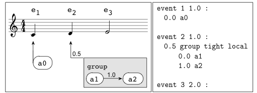

<div class="row-fluid">
<div class="span12">


  <h1>A Synchronous Embedding of Antescofo,</h1>
  <h3><center>a Domain-Specific Language for Interactive Mixed Music</center></h3>

  <p><center>G. Baudart, F. Jacquemard, L. Mandel, M. Pouzet</center></p>
  <p><center><a href="http://www.emsoft.org/">EMSOFT 2013</a></center></p>

  <hr>


  <p><a href="http://repmus.ircam.fr/antescofo">Antescofo</a> is recently
  developed software for musical score following and mixed music: it
  automatically, and in real-time, synchronizes electronic instruments
  with a musician playing on a classical instrument. Therefore, it faces
  some of the same major challenges as embedded systems.</p>


  <p>
The system
provides a programming language used by composers to specify musical
pieces that mix interacting electronic and classical instruments. This
language is developed with and for musicians and it continues to
evolve according to their needs. Yet its semantics has only recently
been formally defined. This paper presents a synchronous semantics for
the core language of Antescofo and an alternative implementation
based on an embedding inside an existing synchronous language, namely
ReactiveML. The semantics reduces to a few rules, is mathematically
precise and leads to an interpretor of only a few hundred lines. The
efficiency of this interpretor compares well with that of the actual
implementation: on all musical pieces we have tested, response times
have been less than the reaction time of the human ear. Moreover, this
embedding permitted the prototyping of several new programming
constructs, some of which are described in this paper.
</p>

<div class="row-fluid">
<div class="span6">
  <h3>Ressources</h3>
  <ul>
    <li><a href="./resources/emsoft13.pdf">Paper <i class="icon-file icon-black"></i></a></li>
    <li><a href="./resources/reactive_asco.tar.gz">Code <i class="icon-file icon-black"></i></a></li>
    <li><a href="./videos.html">Videos Demos</a></li>
    <li><a href="./source.html">Source Code</a></li>
    <li><a href="<#ROOTDIR>/distrib/rml-1.08.06-2013-07-12.tar.gz">ReactiveML
	Compiler version 1.08.06</a></li>
    <li><a href="<#ROOTDIR>/reactive_asco/index.html">Project Reactive Asco</a></li>
  </ul>
</div>
<div class="span6">
  <div class="thumbnail">
    
  </div>
</div>
</div>

</div>
</div>
